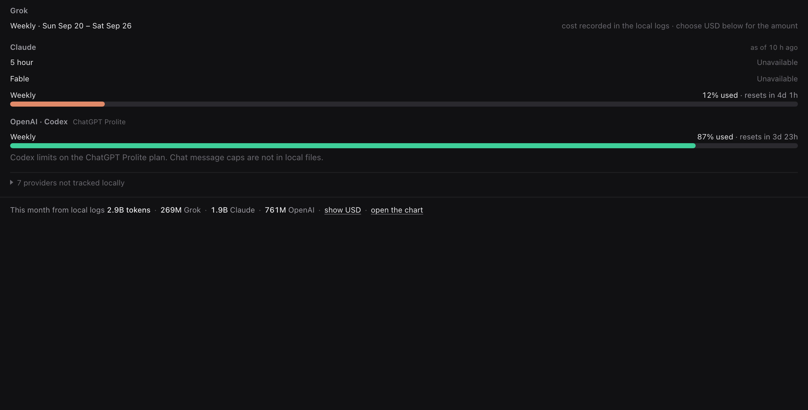
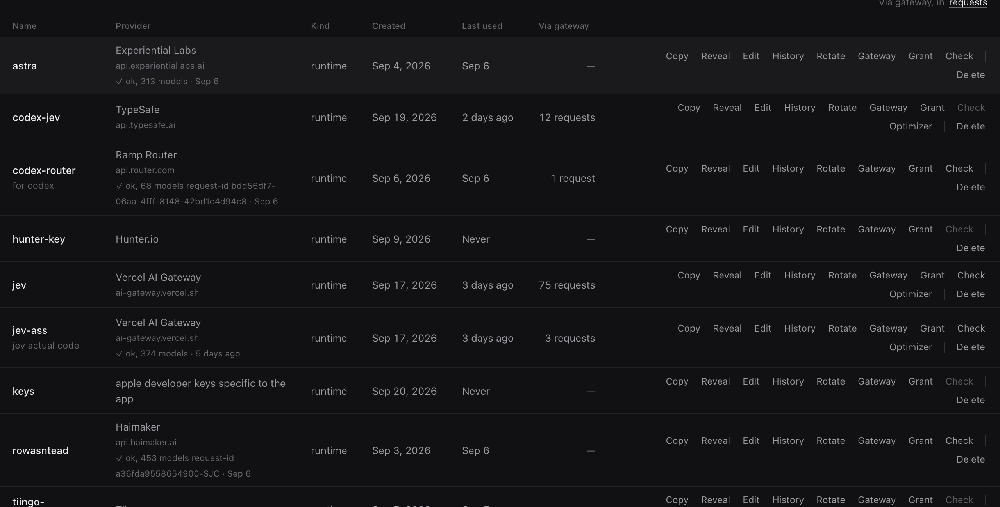

See what your AI tools are using. Keep your keys where they belong.
Keysreallysafe is a Mac menu bar app that reads the usage records Claude Code, Codex and Grok already write to your home folder, shows plan windows and spend at a glance, and stores your API keys in the macOS Keychain behind Touch ID. It runs entirely on your Mac.

What it does
Three things, all local: a usage meter, a key vault, and a gateway that lets a tool use a key without ever seeing it.
Usage meter
Plan windows for Claude (five-hour, Fable, weekly), Codex (five-hour, weekly) and Grok (weekly) as % used · resets in, in the menu bar and on a local dashboard. Tokens are what your Mac measured; a dollar figure is only shown when you ask for it, priced from a published list-price table.
Key vault
API keys go into the macOS Keychain under your login. The app asks for Touch ID (or your login password) every time a value is copied, revealed, exported or rotated. The key list shows names, never values. Clipboard copies wipe themselves after 20 seconds.
Scoped gateway
Give a script or tool a one-task grant instead of the key itself: one Touch ID, one key, one host, a method and path scope, an expiry. The tool calls 127.0.0.1; the gateway adds the real key. Lock the screen or revoke, and the grant is dead.
Honest numbers
A provider whose quota isn't in a local file is listed as not tracked with a link to its own dashboard, never estimated. An unpriced call reads as unknown, never as $0. Cached input is counted the way providers bill it.
Chart and export
Today by hour, or this week and month by day, split by tool and model. Subscriptions from local logs on one side, API-key calls from the gateway ledger on the other. CSV export with raw token and cost columns.
Stays out of your way
One menu bar item. A dashboard on http://127.0.0.1:12766 that opens in your browser. Starts at login. Removing it deletes the login item, the snapshot and every Keychain item it created, after Touch ID.

Privacy boundaries
These are the rules the app is built around, not a policy that can change under you.
Nothing leaves your Mac
- The dashboard and its API bind to
127.0.0.1only. - No account, no sign-up, no server of ours in the loop.
- Optional product analytics is off by default, opt-in, aggregate counters only, and can't include prompts, credentials, key names, paths or device identifiers.
No scraping, no borrowed logins
- It never opens provider websites, cookies or browser sessions.
- It never reads other tools' auth files (
~/.codex/auth.json,~/.grok/auth.json). - Claude's subscription limits come from Claude Code's own built-in
/usagecommand, through its existing login, with no model request.
Secrets stay secret
- Key values never enter the local database, a log, the page, or the key-list API.
- Gateway request bodies never reach the usage catalog.
- Every read of a secret asks for your presence, every time.
Full detail, including what the optional analytics schema may and may not contain, is in the source repository and on the privacy page.
Pricing
Pay once. No subscription, no account, no seat count.
Keysreallysafe for Mac
Per person, on every Mac you use.
- 14-day free trial, full app, no card needed
- All updates within the current major version
- Usage meter, key vault, scoped gateway, chart and export
- 14-day refund, no questions asked
Payments are handled by Stripe. We never see your card number. Prices in US dollars; tax may be added at checkout where required.
Source code is public. New first-party work is proprietary; earlier MIT-licensed material and third-party components keep their licenses. Buying a license supports the project and gives you the signed, notarized build with updates.
Questions
Which tools does it read?
Claude Code, OpenAI Codex CLI and Grok CLI, from the session logs and usage caches they already keep in your home folder. Anything else appears under not tracked with a link to that provider's own dashboard. Plan windows depend on what each tool writes locally; chat-app message caps are not in those files.
Does it need my provider passwords?
No. It reads files your tools already wrote, and never touches their login or auth files. For the vault you paste an API key once; from then on it lives in the Keychain and comes out only after Touch ID.
Is the cost figure real?
Tokens are real: they're what your Mac measured. Dollars are an estimate from a published list-price table applied afterwards, so they're hidden until you choose USD, and anything unpriced reads as unknown rather than $0.
How does the trial work?
Download, run, use everything for 14 days. When it ends, the dashboard and menu bar keep showing what you have but ask for a license to continue; nothing in the vault is ever locked away from you. Buy when you're ready and paste the license once.
Can I get a refund?
Yes, within 14 days of purchase, for any reason. Email support with the address you used at checkout. See the terms.
What Macs does it run on?
macOS 14 Sonoma or newer on Apple Silicon. The download is a Developer ID signed and Apple-notarized disk image, so it opens without any Gatekeeper workaround. An Intel build is not currently offered.
How do I uninstall?
keys autostart --remove unloads and deletes the login item and its snapshot; keys purge removes the local catalog and every Keychain item the app created, after Touch ID. Nothing is left behind.